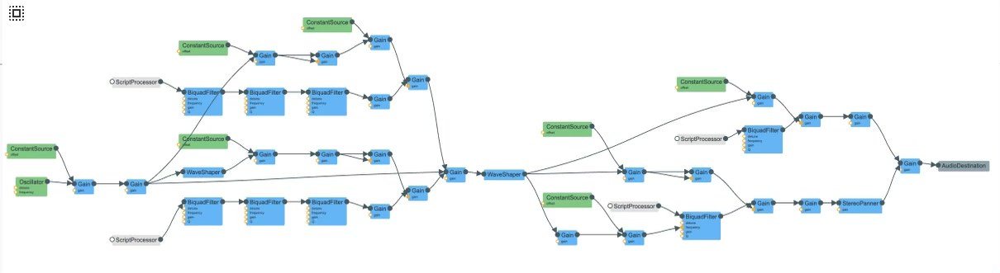

Heavy wind through trees. Modified from Farnell, Designing Sound Part IV: Practicals. I compiled Farnell's pd patch example into web audio, then tweaked the parameters to my liking. I still don't like it though. I was going for a softer, less powerful wind but I'll leave that for another day. The way Farnell structures his model is with a wind speed patch that controls the strength of the wind, a wind noise patch where the actual sound of the wind comes from, and various other wind related patches such as whistling, leaves in the wind, and a flag waving in the wind. I set out to implement all of these, but ended up just doing the basic wind sound plus the whistling. The main difficulty I came across was implementing pd objects that don't have a corresponding Web Audio node, such as max~. To circumvent this issue I used the WaveShaperNode. I don't think it does the exact same thing as max~ (WaveShaper does some sort of linear interpolation perhaps), but it should have a similar effect. I implemented the main pd objects in Web Audio, such as +~, *~, lop~, hip~, and clip~. I also did a little panning, but not as complicated as Farnell. I just panned the whistle slightly right. As I said, it didn't turn out as soft as I'd like it, and I'd also like to implement the other wind related sounds Farnell did. Maybe later. Here's the graph:
